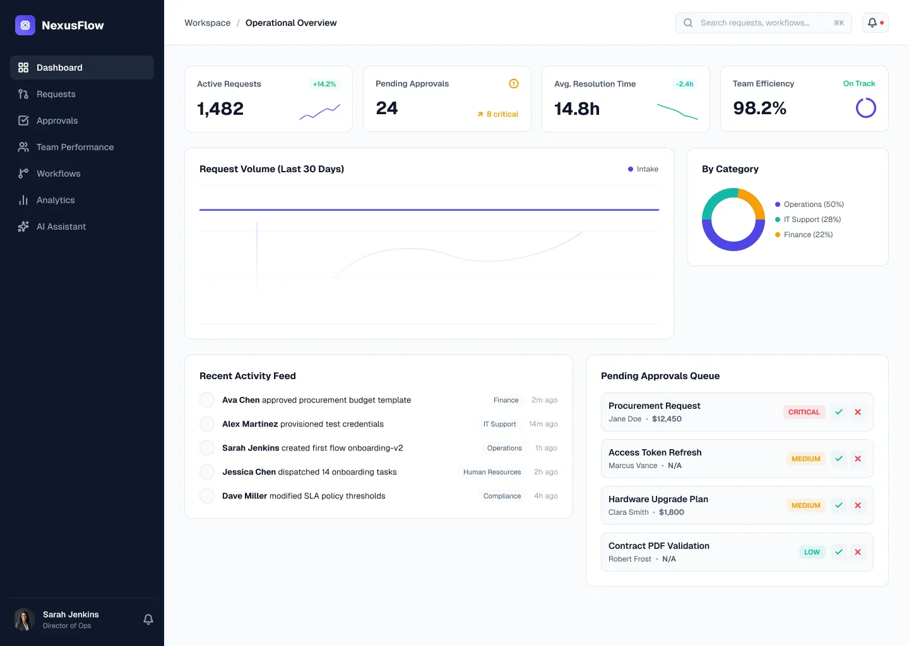
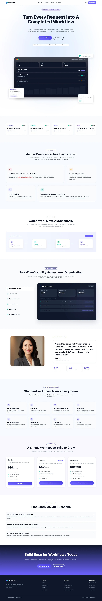
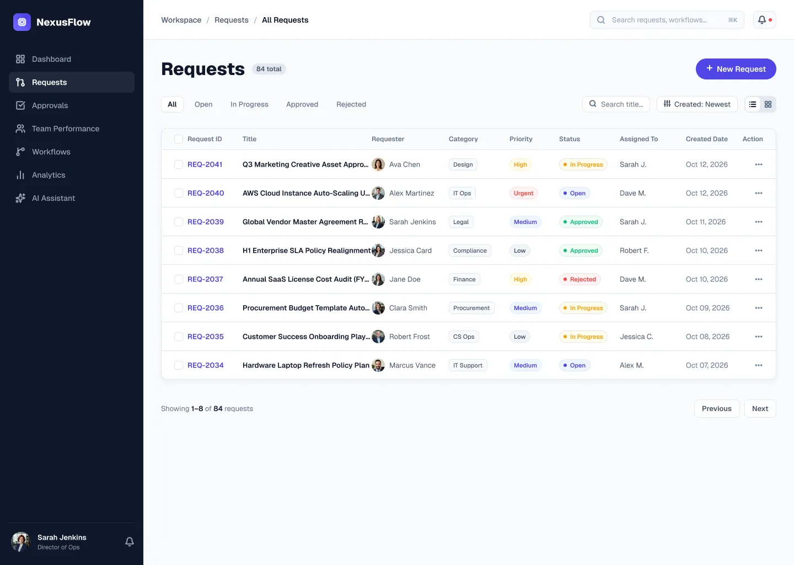
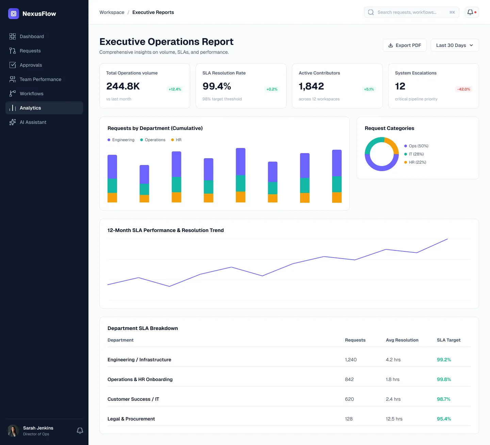
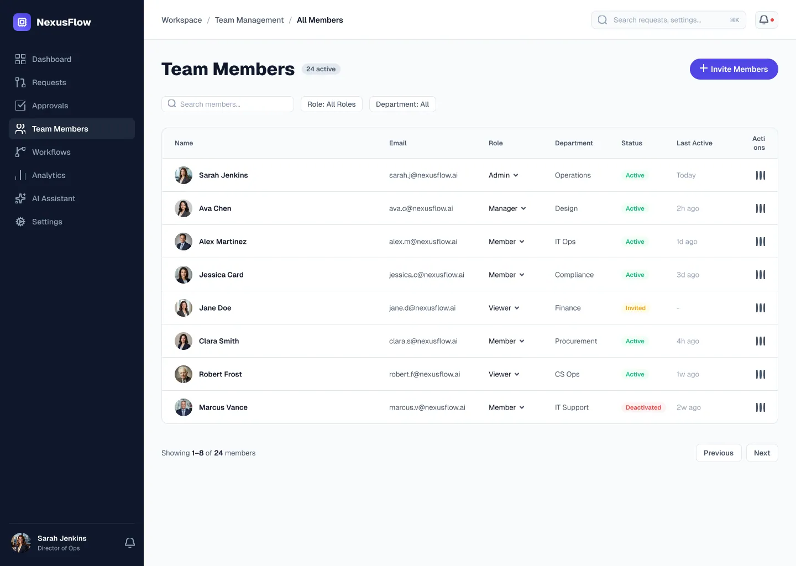
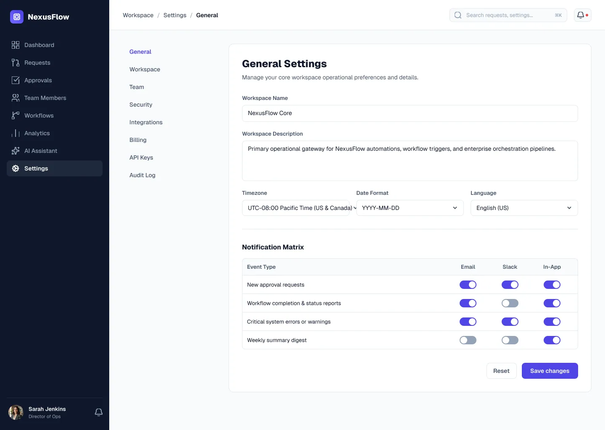
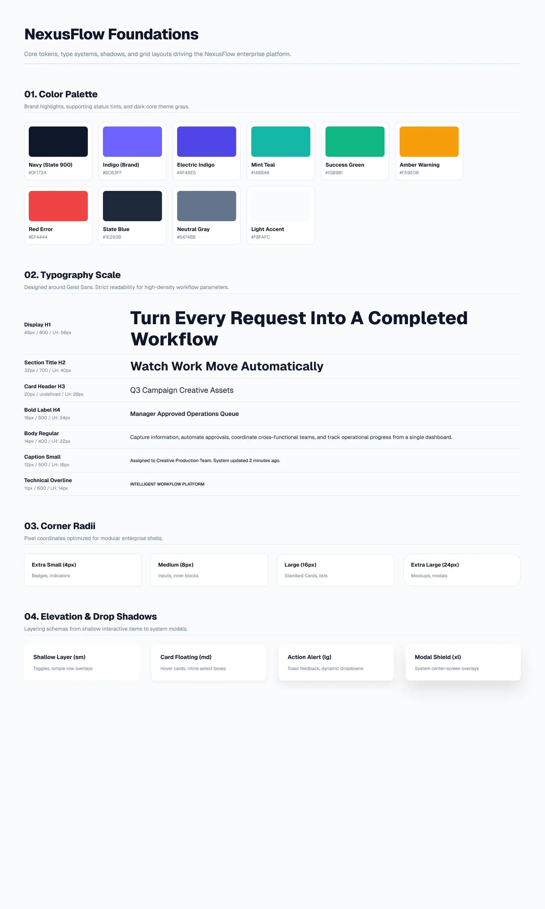

NexusFlowEnterprise workflow SaaS
Turn every request into a completed workflow. - Enterprise SaaS Dashboard UI/UX Case Study
An enterprise workflow platform where requests, approvals, reports and AI routing live in one calm workspace.

01Overview
An enterprise workflow platform where requests, approvals, reports and AI routing live in one calm workspace.
NexusFlow is an enterprise SaaS platform that turns operational requests into automated workflows with approvals and reporting. I designed the marketing site, enterprise sign-in, operational dashboard, requests table, executive reports, team management, settings and the design system foundations.
02The challenge
What had to be solved
Requesters, approvers, managers and executives all touch the same request but care about different things. Enterprise tools usually solve this with more screens and more density.
Design goals
- Give each role its primary question on one screen
- Make status and ownership visible everywhere
- Explain what automation did
- Build foundations so new screens stay consistent
03Process
How I approached it
- One loopRequest, route, approve, execute, track, report, mapped before any screen.
- Role-led viewsSame data, same shell, with each screen answering one role's question first.
- Status as languageColour plus text chips for priority and status on every row.
- Foundations firstColour, type, radii and elevation defined before the screens.
04Marketing site
One promise, shown in the product.
The hero states the outcome and shows the real dashboard with live notifications, followed by workflow templates.

05Operational dashboard
Scan, understand, act.
Four KPIs with direction, request volume, category split, an activity feed and an approvals queue, in that reading order.
06Requests
The source of truth is a table.
Status filters, priority and status chips, owners and one primary action.

07Executive reports
Activity, in the language of performance.
SLA rate, volumes, department breakdown and a 12-month trend for leadership.

08Team, settings and sign-in
Trust lives in the edges.
Team roles, a notification matrix in settings and enterprise SSO sign-in designed with the same care.


09Design foundations
Consistency is a product feature.
Colour palette, typography scale, corner radii and elevation levels used across every screen.

10Decisions
Key design decisions
The dashboard informs first and asks for decisions last, matching how operations leads think.
"Auto-categorised as high priority" is shown as an event, so automation is visible and checkable.
Google, Microsoft and SAML sit first on sign-in, in the order most enterprise teams use.
11Design system
Visual language
A dark navy rail, light canvas and indigo accent, with status colours always paired with text labels.
TypeGeist, high-density readability
12Outcome
What was delivered
NexusFlow gets a coherent enterprise product: a marketing site and seven app surfaces on one shell, one token set and clear status everywhere.
If the project continues, next I would:
- Design the visual workflow builder
- Add mobile approvals
- Run usability tests with approvers